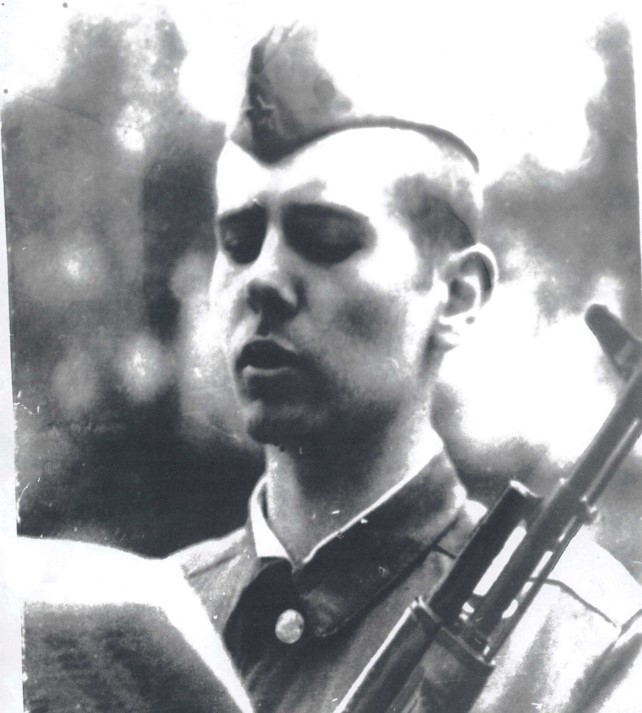
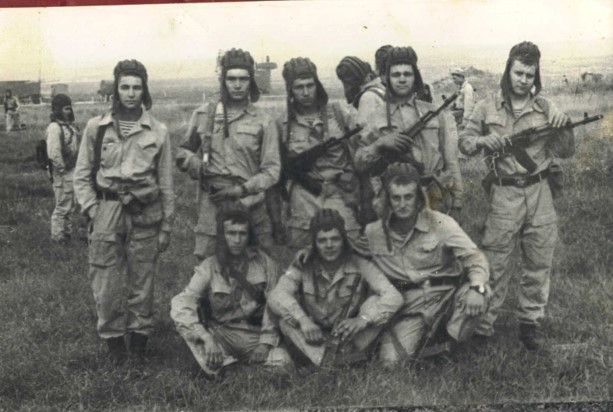
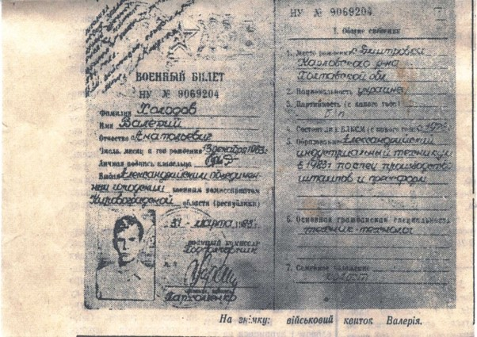

Експозиція «Герої не вмирають»
Окрема сторінка музейної експозиції присвячена випускникам нашого закладу, які з честю виконували військовий обов’язок у локальних конфліктах.
Учні — випускники школи (воїни-інтернаціоналісти):
Офіцери:
- Місюка Олег Леонтійович, 1961 р. н.
- Місюка Анатолій Леонтійович, 1964 р. н.
Солдати:
- Авраменко Володимир Юрійович, 1968 р. н.
- Гонтарь Віталій Іванович, 1967 р. н.
- Тупчієнко Віктор, 1967 р. н.
- Макей Сергій Леонович, 1960 р. н. (служив у прикордонних військах);
- Воткаленко Сергій Павлович, 1964 р. н.
- Холодов Валерій Анатолійович, 1963 р. н.
Пам'яті Валерія Холодова
«В цій школі навчався Холодов Валерій Анатолійович, який загинув при виконанні інтернаціонального обов’язку в Афганістані 13.12.1963 р. – 25.01. 1984 р.» — записано на граніті меморіальної дошки, встановленої в його рідній школі.
Валерій Холодов народився 13 грудня 1963 року в с. Дмитрівці Машівського району Полтавської області. Незабаром батьки переїхали у м. Світловодськ. 1 вересня 1970 року пішов до школи, закінчив 8 класів СШ №4. Навчався на «4» і «5». «Скромний, ввічливий» — ось характеристика, яку дала Валерію його класний керівник В. К. Зайцева. Ось і служба в армії. Афганістан… (За матеріалами статті «Побратався з мужністю і безсмертям», г. «Наддніпрянська правда», №192, 14 грудня 1990 р.)

Валерій Холодов

Випускники — воїни-інтернаціоналісти

Архівні документи та військовий квиток